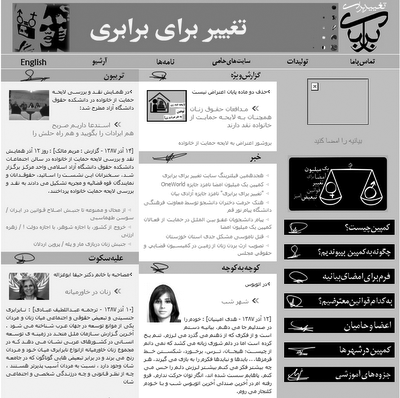

پذيرش > سایت نوشته ها > چرا وبسایت تغییر برای برابری فیلتر می شود؟
 بازتاب بازتاب

 چرا وبسایت تغییر برای برابری فیلتر می شود؟ چرا وبسایت تغییر برای برابری فیلتر می شود؟
20 آذر 1387 - حامیان کمپین یک میلیون امضا در انگلستان - نسخه قابل چاپ
امروز اعلام شد که وبسایت تغیر برای برابری ، برای هجدهمین بار فیلتر شده است . فیلتر کردن سایتها و وبلاگها در ایران تا دو سال پیش طبق مصوبهء مورخ 10/10/81 شورای عالی انقلاب فرهنگی و معروف به مصوبهء 509 انجام می گرفت و شامل وبسایتها و وبلاگهایی می شد که مطالبشان طبق مادهء شش آن مصوبه شامل یکی از موارد زیر می گردید :
1-6- نشر مطالب الحادي و مخالف موازين اسلامي
2-6- اهانت به دين اسلام و مقدسات آن
۳-6- ضديت با قانون اساسي و هر گونه مطلبي كه استقلال و تماميت ارضي كشور را خدشه دار كند.
(عرضه هرگونه نرم افزارهاي فيلتر شكن و پروكسي و با روش عبور از فيلترينگ اينترنت)
4-6- اهانت به رهبري و مراجع مسلم تقليد
5-6- تحريف يا تحقير مقدسات ديني، احكام مسلم اسلام، ارزشهاي انقلاب اسلامي و مباني تفكر سياسي امامخميني(ره)
۶-6- اخلال در وحدت و وفاق ملي
(انتشار هرگونه مطلب توهين آميزيا طنز در رابطه با اقوام مختلف ابراني)
7-6- القا بدبيني و نااميدي در مردم نسبت به مشروعيت و كارامدي نظام اسلامي
8-6- اشاعه و تبليغ گروهها و احزاب غير قانوني
(توليد وانتشار هرگونه محصول فرهنگي صوتي و تصويري، بدون داشتن مجوز از وزارت ارشاد)
9-6- انتشار اسناد و اطلاعات طبقه بندي شده دولتي و امور مربوط به مسايل امنيتي ، نظامي و انتظامي
10-6- اشاعه فحشا و منكرات و انتشار عكس ها و تصاوير و مطالب خلاف اخلاق و عفت عمومي
(انتشار هرگونه عكس و كليپ و تبليغات، بدون پوشش اسلامي)
۱۱-6- ترويج مصرف سيگار و مواد مخدر
۱۲-6- ايراد افترا به مقامات و هر يك از افراد كشور و توهين به اشخاص حقيقي و حقوقي
۱۳-6- افشا روابط خصوصي افراد و تجاوز به حريم اطلاعات شخصي آنان
(انتشار هرگونه عكس و كليپ از حريم خصوصي افراد)
14-6- انتشار اطلاعات حاوي كليدهاي رمز بانك هاي اطلاعاتي ، نرم افزارهاي خاص ، صندوق هاي پست الكترونيكي و يا روش شكستن آنها
(عرضه هرگونه محصول نرم افزاري ثبت شده ايراني بدون در نظر گرفتن حق مولف)
۱۵-6- فعاليت هاي تجاري و مالي غير قانوني و غير مجاز از طريق شبكه اطلاع رساني و اينترنت از قبيل جعل ، اختلاس ، قمار و ...
16-6- خريد ، فروش و تبليغات در شبكه اطلاع رساني و اينترنت از كليه كالاهايي كه منع قانوني دارند.
17-6- هر گونه نفوذ غير مجاز به مراكز دارنده اطلاعات خصوصي ومحرمانه و تلاش در جهت شكستن قفل رمز سيستم ها
۱۸-6- هر گونه حمله به مراكز اطلاع رساني و اينترنتي ديگران براي از كار انداختن و يا كاهش كارايي آنها
۱۹-6- هر گونه تلاش براي انجام شنود و بررسي بسته هاي اطلاعاتي در حال گذر در شبكه كه به ديگران تعلق دارد
۲۰-6- ايجاد هر گونه شبكه و برنامه راديويي و تلويزيوني بدون هدايت و نظارت صدا و سيما
تشخیص مصادیق این تخلفات نیز بر عهدهء کمیته ای گذاشته شد که متشکل از نمایندگان وزارت فرهنگ و ارشاد اسلامی ، وزارت اطلاعات و نیز سازمان صدا و سیمای جمهوری اسلامی ایران بود . جدای از این کمیته ، خود شرکتهایی که به کاربران داخل کشور خدمات اینترنتی ارائه می کردند نیز راسا" هر نوع وبسایت یا وبلاگی که به نظرشان نامطلوب می رسید را فیلتر می نمودند . هرج و مرج ناشی از فیلتر کردنهای بی حساب و کتاب مراجع ذی ربط و بی ربط فیلترینگ در کشور و بستن بیش از پنج میلیون وبسایت و وبلاگ در ایران باعث شد تا دولت برای ساماندهی سانسور اینترنت قواعد و مقررات تازه ای را وضع کند و آیین نامهء مستقلی را تصویب نماید که به آیین نامهء مورخ 29/5/1385 معروف شد . طبق این آیینه نامه کمیتهء فیلترینگ کشور موظف شد تا با مشاهدهء تخلفات مشخصی در هر وبسایت یا وبلاگی با فیلتر کردن آن مشاهده و مطالعه اش را برای کاربران اینترنتی در داخل کشور غیر ممکن کند . تخلفاتی که هیئت دولت در آیین نامهء خود مشخص کرد از این قرارند :
الف – مطالب الحادی و نفی یا تضعیف اصول و ارزش های اسلامی و یا توهین به اسلام و مقدسان آن و اهانت امام (ره) و یا رهبری
ب – توهین به ادیان آسمانی و کتب مقدس و انبیاء و معصومین و مقدسان
پ – تحریک و تشویق به ارتکاب اعمال علیه امنیت ، حیثیت و منافع جمهوری اسلامی ایران
ت – تحریف مطالب امام خمینی (ره) و مقام معظم رهبری مدظلله العالی ، تحریف انقلاب اسلامی ملت ایران و توهین به ارزش های آن
ث – هر گونه اقدام علیه قانون اساسی و یا تفرقه افکنی و خدشه در وحدت و وفاق ملی و استقلال و تمامیت ارضی و یا القاء بد بینی و نا امدی یدر مردم نسبت به مشروعیت و کار آمدی نظام
ج – توهین به اقوام و اقلیت های مذهبی
چ – افشار اسرار و اسناد طبقه بندی شده از قبیل نظامی ، امنیتی و سیاسی دولتی و خصوصی
ح – اشاعه منکرات و ترویج فحشا و مطالب مغایر با عفت و اخلاق عمومی
خ – توهین به اشخاص حقیقی و حقوقی
د – اطلاعات خصوصی و شخصی افراد بدون اخذ اجاره کتبی از آنان
ذ – انجام فعالیت های اقتصادی غیر قانونی از قبیل پولشویی ، تجارت هرمی و غیره .
ر – تبلیغ یا آموزش پایگاه های اطلاع رسانی غیر مجاز
ز – آموزش و ارائه هر نوع روش مقابله با مسدود سازی پایگاه های اطلاع رسانی غیر مجاز (فیلترینگ)
ژ – نشر اکاذیب و افترا
س – برقراری هر نوع پیوند که مبلغ و مروج پایگاه های اطلاع رسانی حاوی مضامین جزء های فوق الذکر باشد.
ش – هر نوع اقدام خلاف شرع یا قانونی دیگر یا مخالف ضوابط و مقررات
جالب اینجاست که علیرغم تصویب مصوبهء سازماندهی فیلترینگ کشور توسط هیئت محترم دولت ، کمیته فیلترینگ اینترنت همچنان با استناد به مصوبهء شورای عالی انقلاب فرهنگی عمل می کند! اما چرا وبسایت تغییر برای برابری فیلتر می شود آنهم با این سماجت؟ وبسایت تغییر برای برابری شامل هیچ یک از مصادیق تخلف در بندهای مصوبهء شورای عالی انقلاب فرهنگی و یا آیین نامهء هیئت دولت نمی گردد . یعنی مطالبش واقعا ناقض هیچ قانونی نیست و مصداق هیچ یک از مواد بیست گانهء مصوبهء شورای انقلاب فرهنگی و یا مواد شانزده گانه ای که آیین نامه هیئت دولت مشخص کرده است محسوب نمی شود . بنابراین از نظر شکلی فیلتر کردن این وبسایت خود عملی غیر قانونی محسوب می شود و در مراجع قضایی قابل پیگرد حقوقی است . از نظر ماهوی و محتوایی نیز مطالب وبسایت تغییر برای برابری مطالبی هستند عادی که صرفا بخش اندکی از ناملایمات و سختی هایی که بر زنان و کودکان ایرانی می روند را بیان می کنند . روزانه دهها و صدها برابر این مطالب نیز در مطبوعات داخل کشور منتشر می شوند .
بنابراین در فیلتر کردن این وبسایت تنها چیزی که مد نظر فیلتر کنندگانش قرار نگرفته است همان قانون فیلترینگ کشور و آیین نامهء مصوب هیئت دولت و نیز مصوبهء شورای عالی انقلاب فرهنگی بوده است . اساسا به نظر می رسد که فیلتر کردن وبسایت تغییر برای برابری توسط کمیته تشخیص مصادیق فیلترینگ انجام نمی شود و شخصی و یا اشخاصی به اصطلاح امنیتی! که تصور نمی رود تعدادشان از چند تن فراتر برود در جایی که هیج ربطی هم به کمیته فیلترینگ ندارد ، به گونه ای کاملا خودسرانه ، غیر قانونی ، شخصی و احتمالا محفلی و از سر لجاجت و کینه توزی و نفرتی که از مدافعین حقوق زنان و گروههای فعال در حوزه حقوق زنان و اصولا خود زنان دارند انجام می گیرد .
البته این امنیتی چی ها آب در هاون می کوبند چرا که بعد از هربار فیلتر شدن، این وبسایت نشانی تازه ای را اعلام می کند و خوانندگانش در داخل کشور به سادگی و با تایپ نشانی جدید آن خواندن مطالبش را پی می گیرند . شخص و یا اشخاص فیلتر کننده نیز پس از چندی تکانی به خود داده و مجددا نشانی جدید آن را فیلتر می کنند . این ماجرایی بوده که از دو سال پیش شروع و تاکنون هجده باز تکرار گردیده و بیش از هر چیز باعث تحقیر فیلتر کنندگان شده است . شاید شخص فیلتر کننده و همدستان تصمیم گیرنده اش (که قوانین جاری مملکت را به پشیزی نمی گیرند) تصور می کنند با ادامهء عمل غیرقانونی شان و تداوم این بازی فرسایشی کار را به جایی خواهند رسانید که گردانندگان وبسایت تغییر برای برابری خود خسته شوند و همچون هزاران هزار وبسایت و وبلاگ دیگر قید دور زدن فیلترها را بزنند و به قطع ارتباط با خوانندگان داخل کشورشان تن در دهند . اما به نظر نمی رسد که بازی چندش آور فیلتر کنندگان قانون شکن و مجهول الهویهء محفل نشین چنین فرجامی داشته باشد .
فیلتر کردن سایت تغییر برای برابری جدای از آنکه ثابت کننده نقش و تاثیر قوی و عمیق مطالبش بر خوانندگان داخل کشور می باشد ، نشاندهندهء عمق استیصال و درماندگی رقت بار فیلتر کنندگانش در برابر حق طلبی مسالمت آمیز زنانی است که برای به دست آوردن حقوقی برابر با مردان در قوانین کشورشان به گونه ای خستگی ناپذیر تلاش می کنند . دست مریزاد سعی شان و جزمتر باد عزمشان .
حامیان کمپین یک میلیون امضا در انگلستان
ارسال به
بالاترین
،
توییتر
،
فریندفید
،
فیسبوک
در همين بخش :
 یک خبر تلخ؟ یک قانونشکنی؟ یک تصمیم بخشنامهای جدید؟ یک خبر تلخ؟ یک قانونشکنی؟ یک تصمیم بخشنامهای جدید؟
چرا بایست به سکسوالیته پرداخت؟ / نفیسه آزاد
آزارجنسی خانگی؛ «قربانی» نه، «نجات یافته»
زنان، بزرگترین بازندگان بهار عرب
سانسور از دیدگاه جنسیتی/الهه امانی
ديگر بخش ها :
طرح یک میلیون امضا
|
مقالات
|
سایت نوشته ها
|
اخبار
|
گزارش كمپين
|
گفت و گو
|
علیه سکوت
|
كوچه به كوچه
|
نامه های شما
|
گزارش ویژه
|
گفتگو با اعضا
|
ویژه سالگرد کمپین
|
تصویر برابری
|
دل آرام علی
|
تریبون
|
مقالات
|
تاریخ شفاهی
|
خارج از چارچوب
|
کتابخانه
|
درباره کمپین
|
کمپین در شهرها
|
کمپین در بند
|
صدای تغییر
|
ویژه 22 خرداد
|
لایحه حمایت از خانواده
|
گالری
|
عشا مومنی
|
امیر یعقوبعلی
|
خدیجه مقدم
|
راحله عسگری زاده و نسیم خسروی
|
پروین اردلان،جلوه جواهری، مریم حسین خواه، ناهید کشاورز
|
زینب پیغمبرزاده
|
سعیده امین، سارا ایمانیان، محبوبه حسین زاده، ناهید کشاورز و همایون نامی
|
احترام شادفر
|
نسیم سرابندی زاده،فاطمه دهدشتی
|
وبلاگ مهمان
|
پرونده خرم آباد
|
دستگیری ها
|
مریم مالک
|
پرستو اللهیاری
|
مهرنوش اعتمادی
|
سمیه رشیدی
|
Other Languages
|
همراهان
|
«فراخوان کمپین ده روز با بهاره هدایت»
| English
|